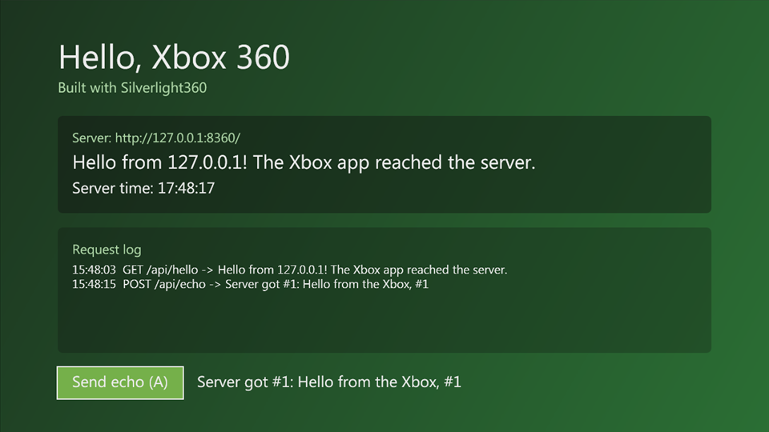
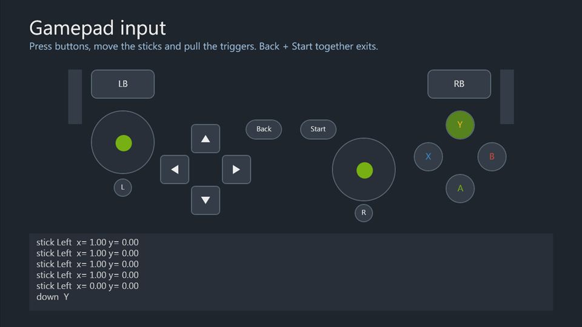
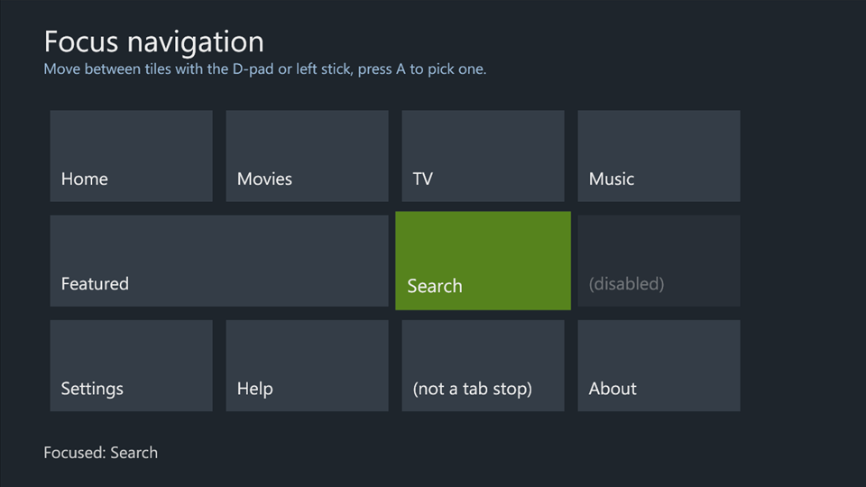
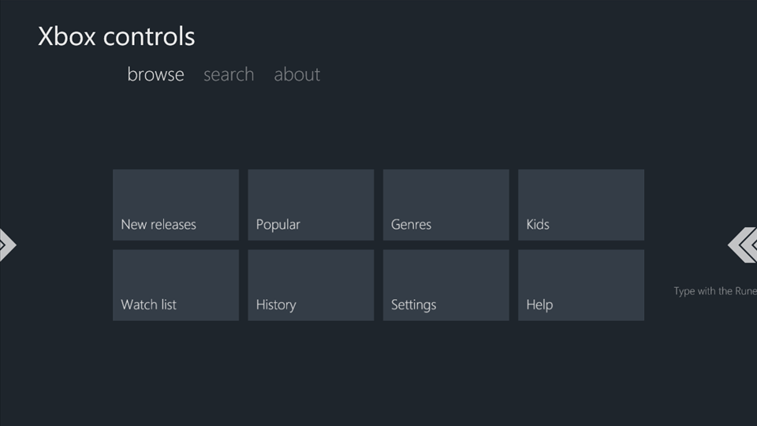
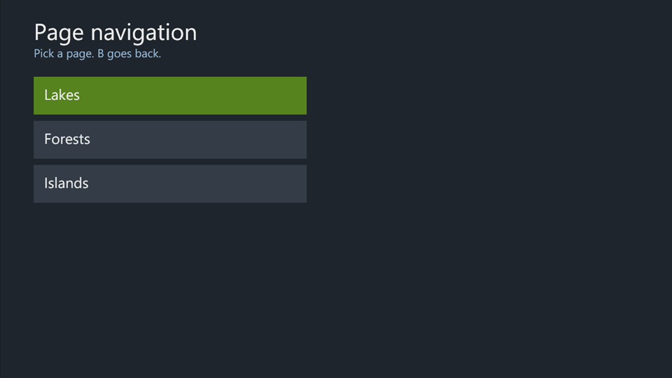
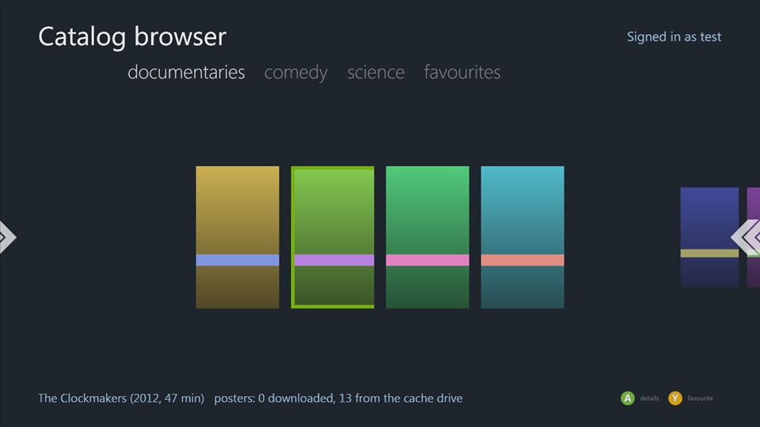
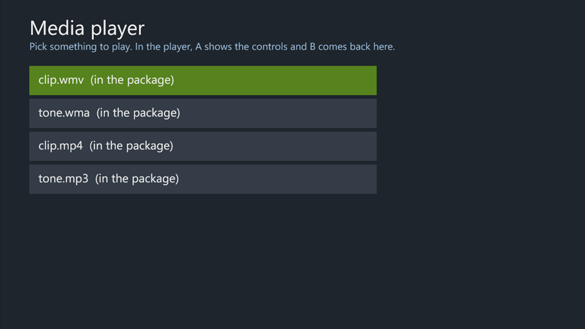
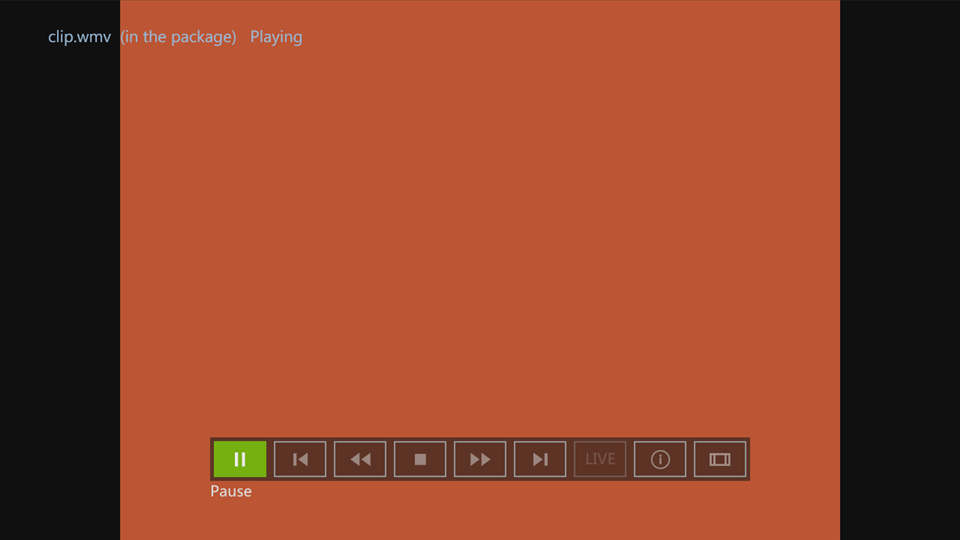
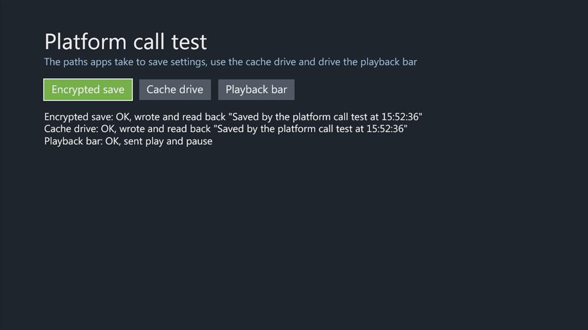

Samples¶
Build any sample with tools\Build-XboxApp.ps1 -Project <csproj> and run its bin\Release\xbox\default.xex in xenia. Code shared by several samples is in samples\Common: ServerClient (HTTP), DirectionalFocus (D-pad focus movement) and DebugLog (debug output to xenia's log; see Testing).
UI samples¶
| Sample | Shows | Tested in xenia |
|---|---|---|
| ui\GamepadInput | Every controller event live: button down/up, both sticks, both triggers, how bubbling and Handled work, Application.Shutdown on Back+Start. |
Y, X, D-pad, RB, left stick and left trigger events shown live. |
| ui\FocusNavigation | Focus on a grid of tiles: a focused-state template, A clicking the focused Button, D-pad and stick movement with DirectionalFocus, disabled and non-tab-stop controls skipped, unused buttons bubbling to the page. |
D-pad and stick moved focus across the grid, including onto the wide tile; A clicked. |
| ui\XboxControls | Pivot sections switched with LB/RB and built-in grid navigation, a Rune for text entry, a Legend following the focused control. |
Focus moved by the PivotItem; RB switched sections; the Rune typed "bc"; the Legend changed with focus. |
| ui\PageNavigation | XboxApplicationFrame with XboxApplicationPages, query-string parameters, staggered transitions, B for back, going back to the first page. |
Opened a page, went one deeper, B went back; four pages deep, "Back to the start" unwound to the home page and the home buttons still opened pages. |
Application samples¶
| Sample | Shows | Tested in xenia |
|---|---|---|
| apps\CatalogBrowser | A streaming-style catalog: an XML catalog from a server, a Pivot per category built in code, posters cached on the cache drive, a detail page, favourites saved in a storage container (Y toggles them), the signed-in gamertag, a Legend. Needs the test server. |
Catalog and posters loaded; gamertag shown; Y added a favourite and the detail page saw it; posters came from the cache drive on later loads; B went back; RB switched categories. |
| apps\MediaPlayer | A media list and a player page with MediaTransport around a MediaElement: MediaAssetId, focus, the Back event, stopping on leaving, state changes and failures logged with DebugLog. Lists files packaged in its Media folder (played from a URI relative to the XAP) and files from the test server's samples\TestServer\media. |
List, player page, transport bar and back work; WMA plays from the package and the server. With the codec loader and the console's codec module (see Media), packaged WMV and MP3 play too; MP4 plays with a garbled picture. |
Earlier samples¶
| Sample | Shows |
|---|---|
| HelloXbox | The smallest app: XAML, A on the controller, HTTP GET and POST to the test server, a DebugLog line at startup. |
| NativeProbe | DllImport into xam and the kernel by ordinal. |
| PlatformCalls | A storage container, the cache drive and MediaTransport commands, each reporting OK or the error. Written to test the xenia fixes for them. |
Screenshots¶
All taken in xenia-edge.
 |
 |
| HelloXbox | GamepadInput |
 |
 |
| FocusNavigation | XboxControls |
 |
 |
| PageNavigation | CatalogBrowser |
 |
 |
| MediaPlayer, the list | MediaPlayer, a WMV playing |
 |
|
| PlatformCalls |